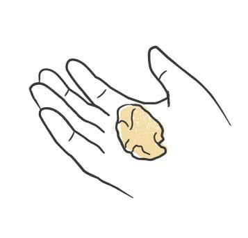
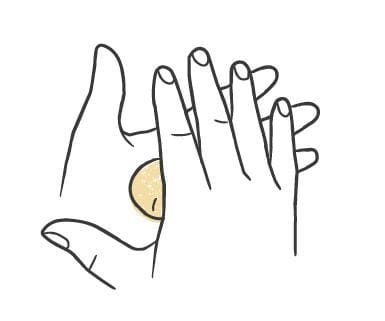
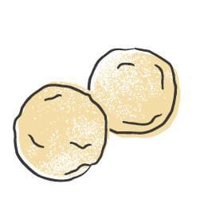

Pasta / Dishes
Canederli with Speck and Brown Butter
- Dough
- Canederli Dough
- Shape
- Canederli with Speck and Brown Butter
- Region
- North
- Serves
- 4-6
- Total Time
- 1 h 30 min plus drying the bread overnight
- Source
- Missy Robbins, Pasta
Shaping



Ingredients
Batch
- Jewish-style rye bread: 397 g
- Milk: 474 g
- Olive oil: 56 g
- Onions, finely diced: 204 g
- Eggs, mixed: 200 g
- Speck, in a slab, finely diced: 85 g
- All-purpose flour: 40 g
- Parsley, finely chopped: 10 g
- Unsalted butter, cold and cubed, to finish: 171 g
- Parmigiano-reggiano, finely grated, to finish: 30 g
- Chives, finely sliced, to finish: 10 g
Method
- Cut the bread into 1-inch cubes and spread them on a sheet pan to dry out overnight. If you need them sooner, hold the pan in a 200°F oven for an hour, long enough to harden without taking colour. Cool.
- Tip the cubes into a large bowl, pour the milk over and leave 20 to 30 minutes, until no hard centres remain.
- Meanwhile set a sauté pan over medium-low heat with the oil and onions. Give them 15 to 20 minutes, to the point where they are only starting to caramelise. Turn them out into a bowl and let them cool.
- Fold the cooled onions into the soaked bread along with the eggs, speck, flour and parsley. Press out any lump of bread that has survived, so the mixture is even throughout.
- Cover and chill 30 minutes to 1 hour.
- Roll the mixture into 18 canederli.
- Salt a large pot of water heavily and bring it to the boil. Line a sheet pan with parchment.
- Drop in half the dumplings and bring the heat down to a bare simmer. Give them 20 to 25 minutes, until soft without collapsing. Lift them out onto the lined pan and repeat with the rest, keeping the batches apart. Dip the first batch back into the pot at the end to bring it up to heat.
- Melt the butter in a saucepan over medium-low heat and take it to golden and foaming, 2 to 3 minutes. Hold it warm.
- Divide the dumplings between bowls and spoon the butter over, enough that a little pools underneath. Finish with the parmigiano and the chives.
Notes
- Cook them in two batches. A pot loaded all at once will not cook evenly.
- These are the Italian side of the Austrian Knödel, and what makes them Italian is the parmigiano and the speck.
- Spinach is the usual swap for the speck. The parmigiano stays either way.
- The other way to serve them is in brodo rather than butter.
- The overnight dry matters more than it looks. Bread that is still soft turns to paste once the milk goes in.
Learnings
Not made yet.